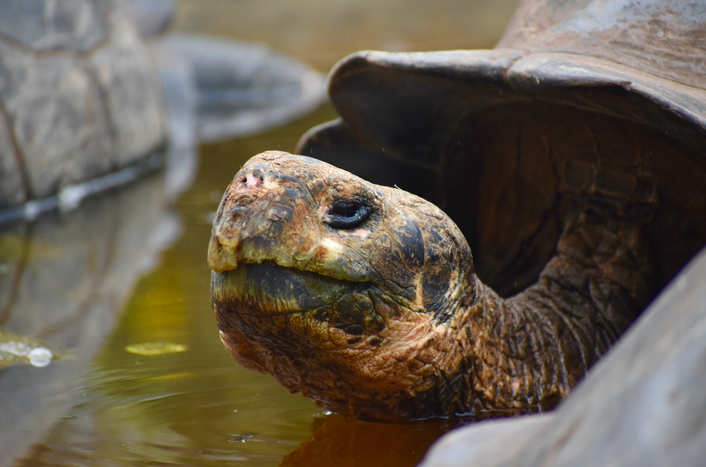

Santa Cruz

Things to do for free:
Tortuga Bay
Tortuga bay is Santa Cruz’s biggest free and walkable sandy beach. It has two major parts: a sandy strip with a lot of waves, and a sheltered bay lined by mangroves. The walk is about 40 minutes to the beach and is relatively flat. You can follow simple directions to the path by using Google Maps.
In the bay, you can rent a kayak. This can be fun for spotting white tipped reef sharks. The silty sand in this bay makes the visibility underwater terrible, so it is actually easier to see the sharks from above water than below water (the water is very shallow). If you don’t want to rent a kayak, you can just walk around the bay, but watch your step!
Las Grietas
Las Grietas is a fun snorkel spot composed of two tall rock walls that form a water-filled canal. It is sheltered, so it doesn't have waves. Here you can spot some big fish and even some eels. Although it is not filled to the brim with biodiversity, the location itself is very fun, and you can climb up and jump off the rock walls if you are feeling adventurous.
To get here, you will need to take a water taxi for 80 cents a person. Simply walk down to the pier and you will ask the water taxis waiting there for a ride to las grietas. There will likely already be either a taxi waiting with passengers, or other passengers waiting on the pier for a taxi. You will be offloaded onto an unsuspecting looking pier. Continue straight along the path, veering left onto the small beach when you reach it. This turn will be obvious because you will reach a point where you can either enter a hotel property or continue along the beach. The path will continue behind the hotel, through some wetlands and salt marshes, and eventually up to the snorkel spot. After snorkeling, you can lay out and enjoy the small beach you passed, or wait for another water taxi on the dock where you were dropped off.
Note: while you can climb up the rocks barefoot at las grietas, the lava rocks in the Galápagos can be very unforgiving, so water shoes such as chacos can be very convenient.
Charles Darwin Research Center
The Charles Darwin Research Center is the biggest and most easily accessible tortoise breeding center on the island. They even have Lonesome George’s body preserved by taxidermy on site. Here you can see the differences between the tortoises of different islands, and you will get to see them at all different sizes and ages. This center is the most elaborate and educational with the most signs and habitats. Although any breeding center will suffice for seeing the giant tortoises, this one is definitely the most comprehensive and informational.
To get here, you can follow directions easily on Google Maps. It is about a 10 minute walk from the center of town and is open until sunset. The exhibits are marked and relatively easy to find.
Cheap Attractions:
El Chato ($25)
El Chato is a plot of land with lava tunnels and wild giant tortoises. It is a $10 taxi drive each way, and a $5 entrance fee. Giant tortoises wander around freely in the highlands of Santa Cruz, and frequently visit the watering hole at El Chato. This is a great experience for viewing tortoises outside of a breeding center. The lava tunnels are also fun to walk through, as they are naturally occuring and very pretty. There is also a restaurant on site where you can get lunch.
Paid Tours
Bartolome Island ($200)
Bartolome Island is an island between Santa Cruz and Isabela. It is most known for the opportunity to see Galápagos penguins and its famous lookout point. The tour can be a great option if you want to see a few penguins but will not have time to do the Tintoreras tour on Isabela island. You will take a hike onto the island to the lookout point, with the chance of seeing boobies along the way. When snorkeling, you will have the chance to see fish, sea lions, sea turtles, and even penguins.